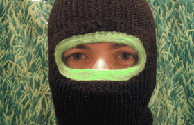

by Addie Wagenknecht and Pablo Garcia
In a climate of snapchat sexts and unremitting dick-pic scandals, where sexuality is democratized and accessible to the point of being banal, how do we even define pornography? It might be a question of intent. The Venus De Milo isn't pornographic because it wasn't meant to titillate; Girls Gone Wild is pornographic because it means precisely that. Never mind that the Venus bears more flesh than a drunken sorority girl flashing a video camera. The standards we use to delineate differences between high and lowbrow sexuality are archaic, couched in the aesthetic ideals of canonical Western art. There are nudes, and then there are n00dz. But is there a difference?
James Powderly
James born in Chattanooga, Tennessee, U.S.A. in the year of the dragon. He has been making technology and media at the fringes of robotics, graffiti, space science, tattoos and rock n roll since 1992. He co-founded F.A.T LAB in 2007. I am James Powderly and I approve of this message.

Theo Watson
Theodore is an artist, designer and experimenter whose work is born out of the curiosity and excitement of designing experiences that come alive and invite people to play. He is one of the developers of Open Frameworks.

FLATTR
VIMEO


GITHUB
FUCK FLICKR